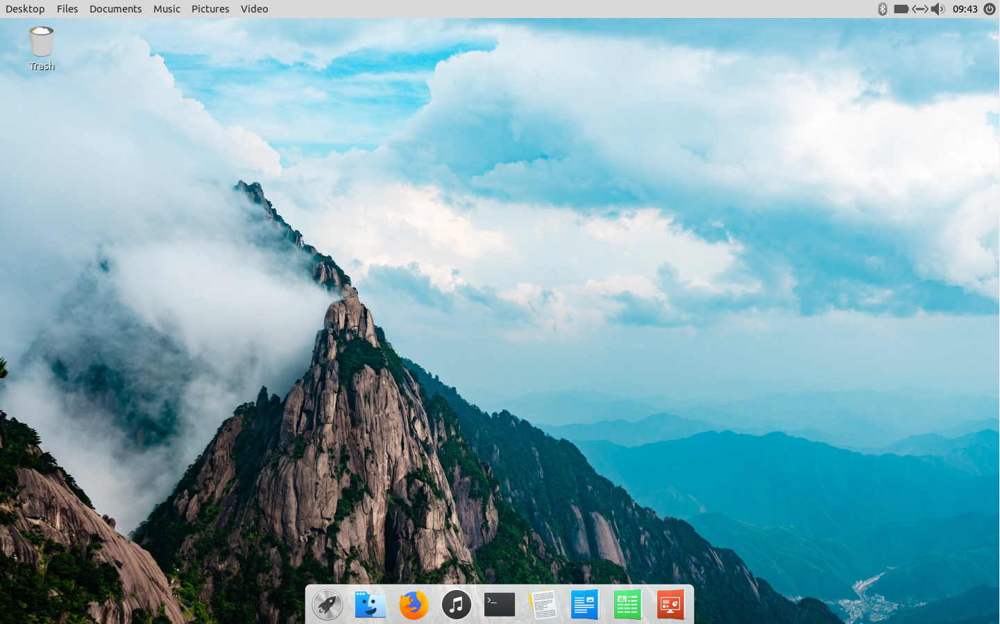
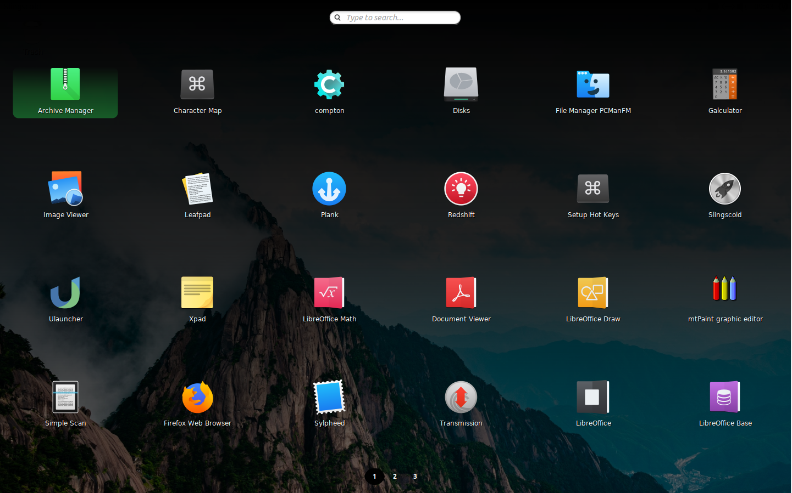
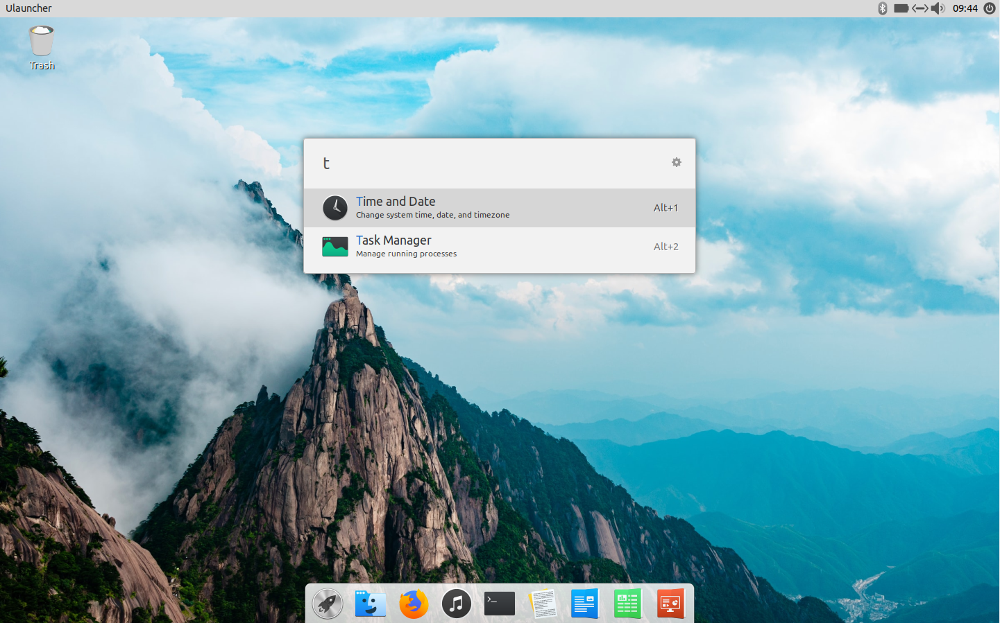
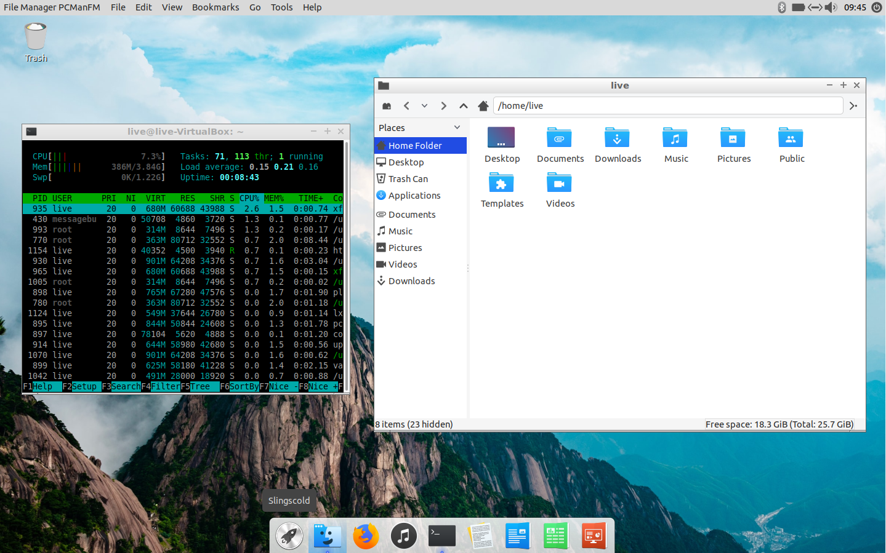
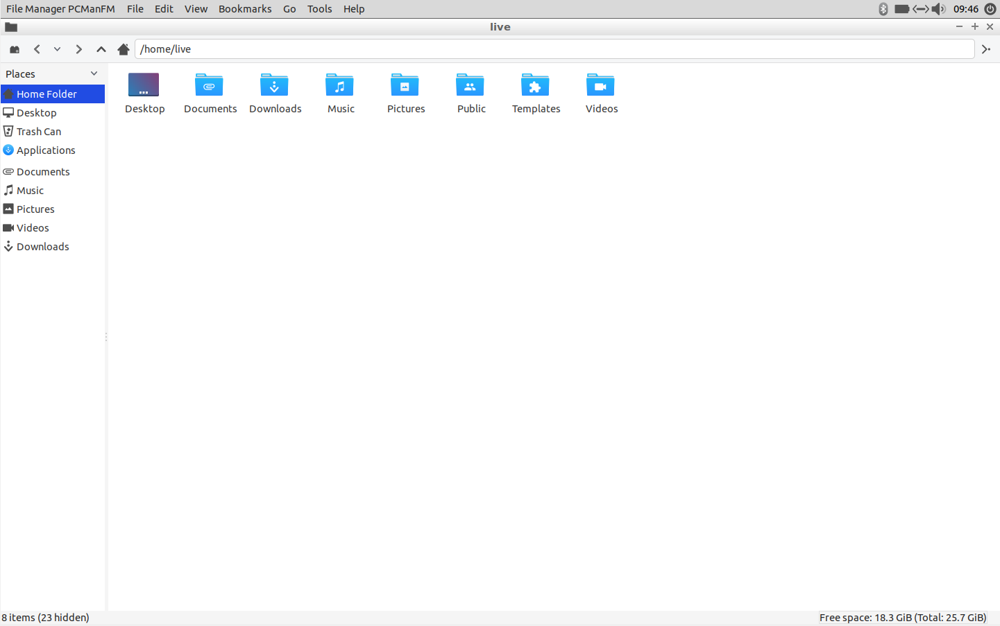

Welcome to the desktop!

Along the top of the screen runs the Top Panel (vala-panel and lxpanel). On the left, it contains a global menu, where a lot of the functions for many applications are housed. On the right, you have access to a system tray, with icons for controlling different settings and applications. Finally, on the far right, there's a clock displaying the time, and a power button, to logout, shutdown, suspend, and otherwise end your session.
The bottom of the screen houses a dock. The dock lets you quickly launch applications, and it'll also display all the currently open applications. On the far left end of the dock, a rocket-ship icon launches the App Launcher.

The App Launcher (Slingscold) is a full-screen app launcher. You can search for programs you have installed by their name, and also scroll through the list to find the app you want to launch. Hit escape to exit. You can also hit the Windows key to launch it.

Sometimes, you want to just quickly launch an app, perform a calculation, search Wikipedia, or any other number of functions. Hitting Ctrl+Space on your keyboard activates Spotlight (Ulauncher), a simple application that will let you instantly perform common functions from your keyboard via search.

Working with multiple windows is a breeze with the ValeOS Window Manager (Openbox). Stack windows, or resize them by dragging the edges to tile them. The three buttons in the top left, from left to right, let you minimize, maximize, and close out of the window respectively.

When a window is maximized, the dock will disappear so that it doesn't get in the way of your view. Hover over the bottom of the screen to access it again.
For more support, we suggest the Ubuntu forums, which you can view here.